Tiệm bánh của chúng tôi sẽ luôn cố gắng tạo cho bạn những sản phẩm tốt nhất và thỏa mãn những yêu cầu của khách hàng để làm ra được những sản phẩm ngày càng chất lượng hơn
Chỉ với những nguyên liệu cơ bản như bột mì, trứng, sữa, matcha, chocolate... qua bàn tay khéo léo của người thợ, hàng ngàn chiếc bánh đã ra đời, đem đến cho thực khách vô vàn sự lựa chọn.
Những chiếc bánh thơm ngon,quyến rũ sẽ thay bạn gửi đi yêu thương
Đó có thể là chiếc bánh cuộn trà xanh thơm ngon, hay miếng bánh hoa quả đầy quyến rũ... Dường như chỉ cần nhìn thoáng qua cũng đủ khiến bạn mê mẩn mãi không thôi.
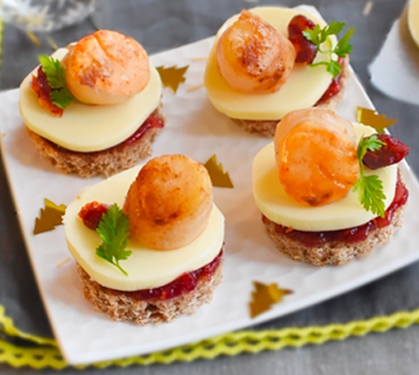
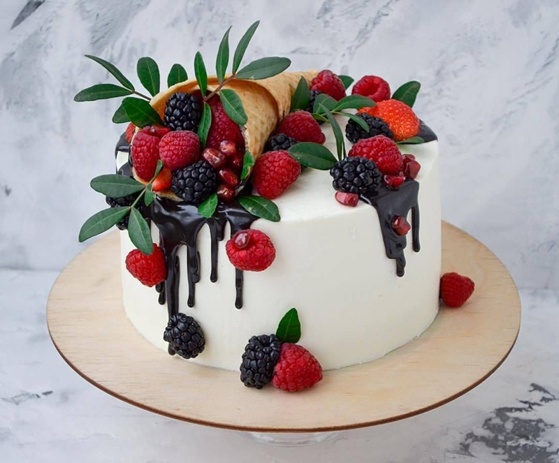
Mỗi một loại bánh sẽ mang đến cho bạn những cảm xúc khác nhau có hạnh phúc, có lưu luyến,có ưu thương, thanh thản,...và trong mỗi chiếc bánh đều chứa đựng những tình cảm mà người làm muốn gửi đi.
10 loại bánh đặc trưng của Nhật Bản
Bánh Wagashi
Bánh Mochi
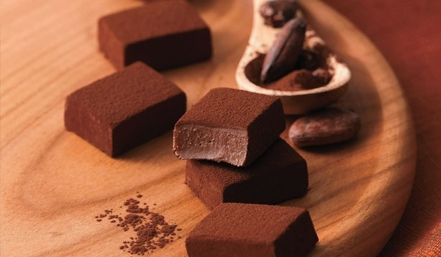
Nama Chocolate
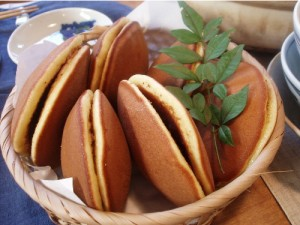
Bánh rán Dorayaki
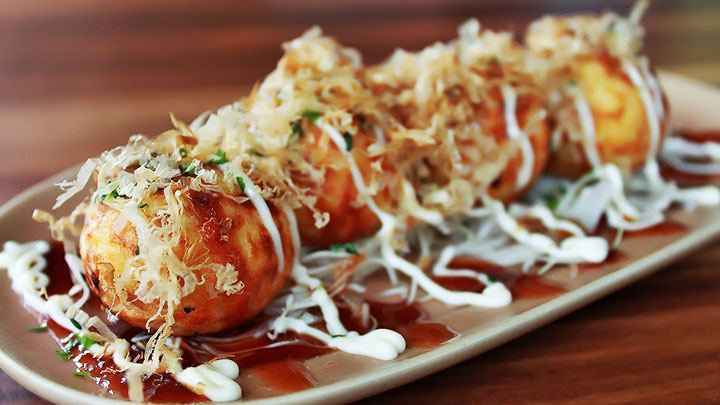
Bánh Takoyaki
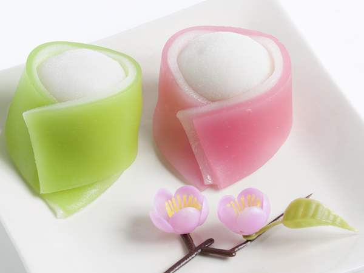
Namagashi
Bánh Okonomiyaki
Choux Cream
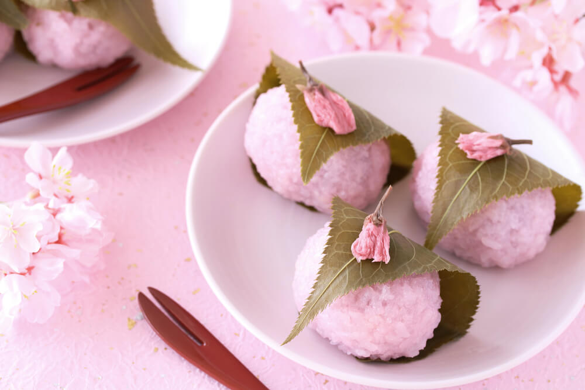
Sakura Mochi
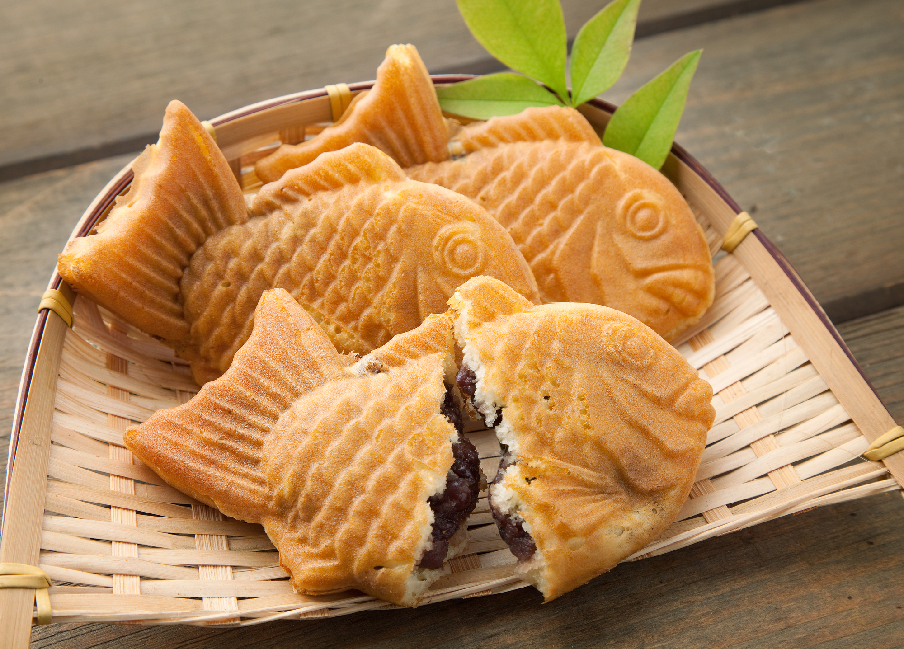
Taiyaki
Đắm chìm trong "tình yêu" với những chiếc Red Velet
Bắt nguồn từ Mỹ và được ưa chuộng ở khắp nơi trên thế giới, bánh Red Velvet không chỉ nổi tiếng bởi vẻ ngoài quyến rũ với sắc đỏ đặc trưng của cốt bánh xen lẫn cùng lớp kem trắng mịn, nó còn thu hút bởi hương vị cacao thơm nồng kết hợp hài hòa với phần cream cheese chua chua, béo ngậy. Tất cả những điều đó đã hòa quyện để tạo nên một chiếc bánh hấp dẫn khó cưỡng lại, cho dù là ổ bánh truyền thống hay những chiếc cupcake bé xinh.
Red Velvet còn được mệnh danh là nữ hoàng của các loại bánh.
Bên cạnh hương vị và màu sắc, bánh Red Velvet còn gây ấn tượng bởi cái tên quá đỗi kiêu kỳ - những chiếc bánh nhung đỏ nồng nàn và say đắm. Tên gọi này quả thật đã miêu tả rất chính xác đặc tính của nó: mềm mại, ẩm mịn và luôn rực rỡ. Với sắc đỏ như nhung đầy mê hoặc, loại bánh nữ hoàng này rất thích hợp để làm quà tặng trong những buổi tiệc cưới, kỷ niệm, Giáng sinh hay ngày Valentine.
Chỉ cần những nguyên liệu đơn giản và dễ tìm, việc tạo ra một chiếc bánh nhung đỏ ngon miệng và đẹp mắt ngay tại nhà sẽ không quá phức tạp hay tốn nhiều thời gian.
Hiện nay, có hai cách làm bánh Red Velvet phổ biến nhất là ổ bánh cổ điển và những chiếc cupcake xinh xắn. Tuy nhiên, với bàn tay khéo léo của những người thợ bánh chuyên nghiệp thì bánh nhung đỏ còn có thể được biến tấu thành: cheese cake, mousse cake, pancake, roll cake, whoopie pie, brownies, cookie, muffin, donut, waffle, macaron…
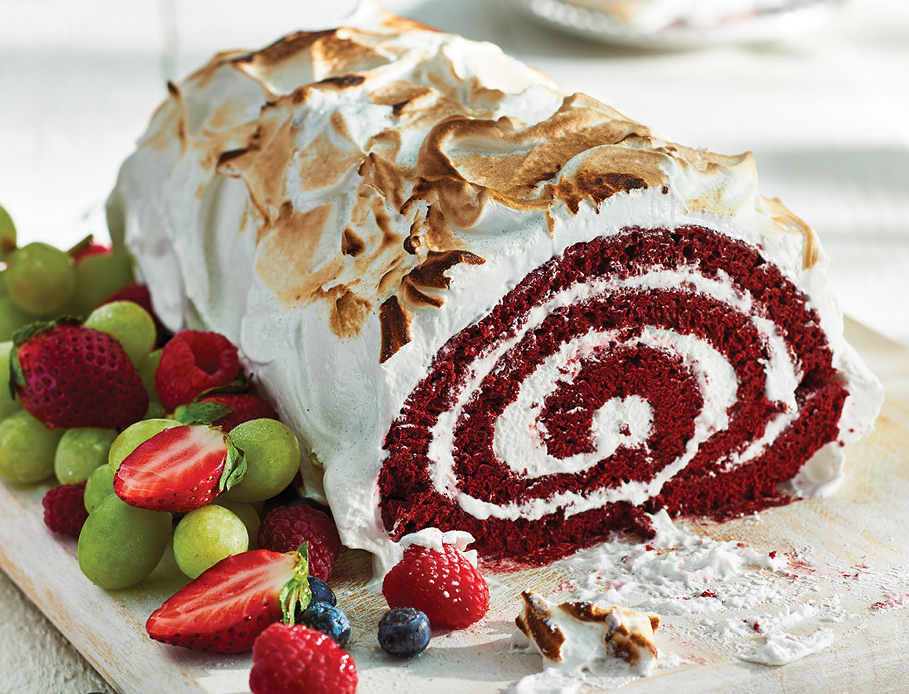
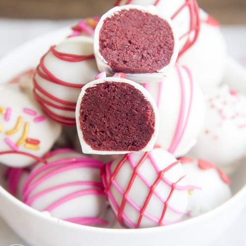
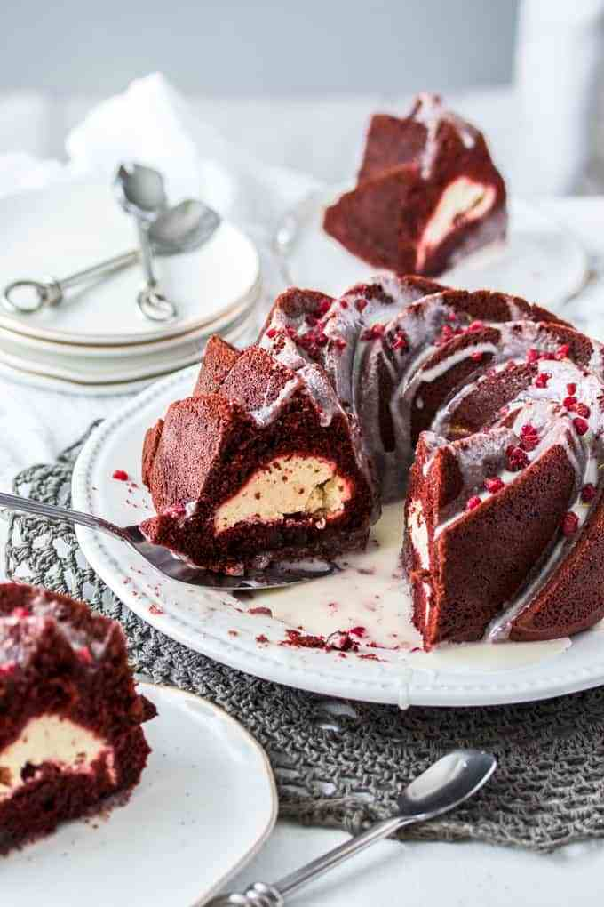
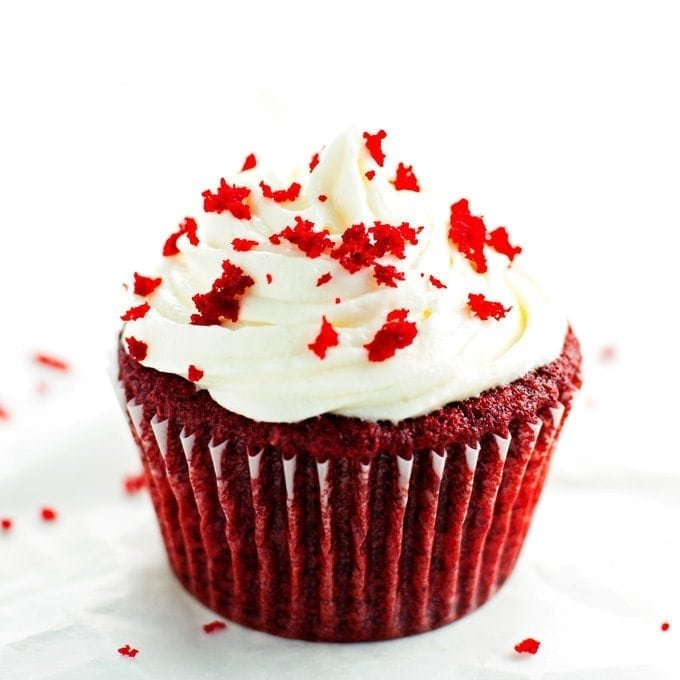
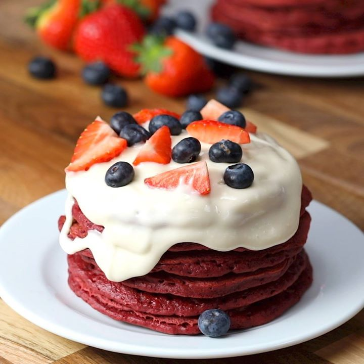
Thành phần chính để tạo nên chiếc bánh nữ hoàng này bao gồm: sữa, đường, bơ (buttermilk) hoặc giấm (vinegar), trứng, bột cacao, bột mì, baking soda và màu thực phẩm. Ở công thức truyền thống, giấm và bơ đều có tính axit nên khi gặp baking soda (NaHCO3) sẽ phản ứng sinh ra màu đỏ sẫm và các bóng khí, những bong bóng này sẽ len lỏi vào bên trong cấu trúc bánh và làm cho nó trở nên mềm mại hơn. Ngoài ra, giấm và bơ còn có thể kết hợp với bột cacao thô (có chứa hợp chất màu hữu cơ anthocyanin) cho ra màu đỏ tự nhiên, làm mềm bột và giữ cho bánh mịn màng hơn. Tuy nhiên, hầu hết bột cacao được bày bán hiện nay đều đã qua xử lý kiềm hoá để làm mất đi tính axit, nên sẽ khó phản ứng với giấm và bơ trong việc tạo màu.
Trong Thế chiến thứ II, không chỉ cacao thô mà những nguyên liệu làm bánh khác cũng rất khó tìm thấy trên thị trường, các đầu bếp đành phải sử dụng màu đỏ chiết xuất từ củ dền hoặc củ cải đường vào trong công thức, để bánh không chỉ có màu sắc bắt mắt và vị ngọt hấp dẫn, mà còn có tác dụng giữ ẩm. Ngày nay, để tiện lợi và mau chóng có được sắc độ như mong muốn, nhiều người đã sử dụng màu thực phẩm để làm tăng thêm độ rực rỡ cho chiếc bánh.
10 loại bánh đặc trưng của Mỹ
Bánh táo Mỹ
Bánh S'more
bánh mì vòng
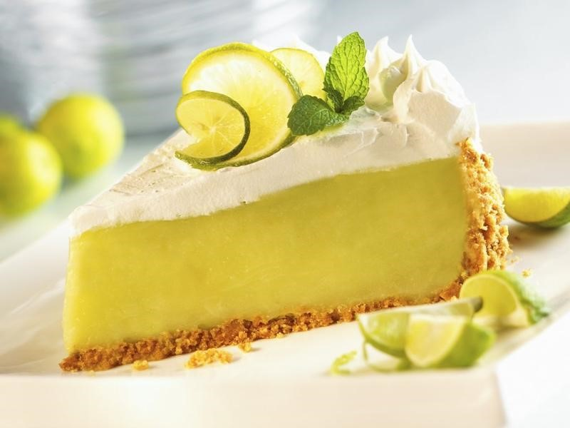
Bánh chanh
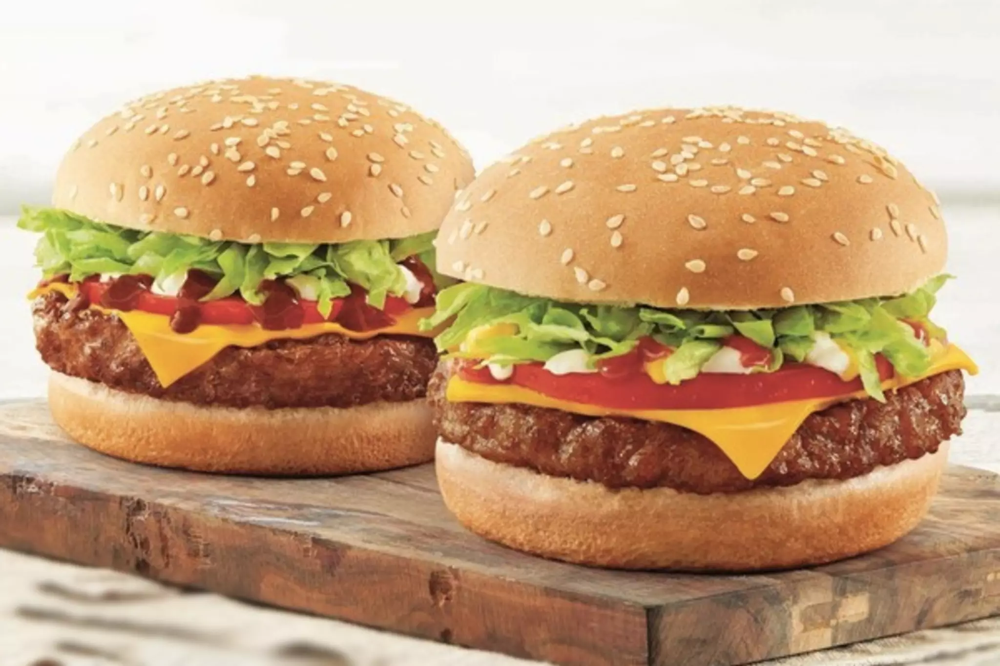
Hamburger
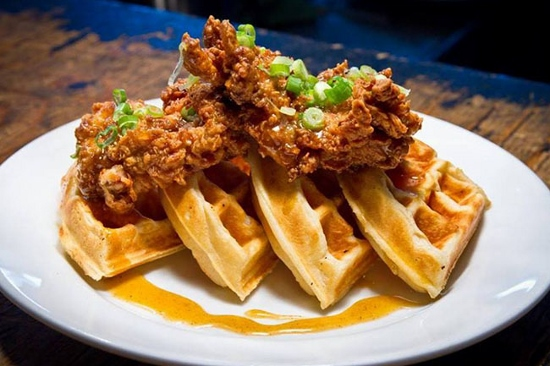
Bánh quế gà
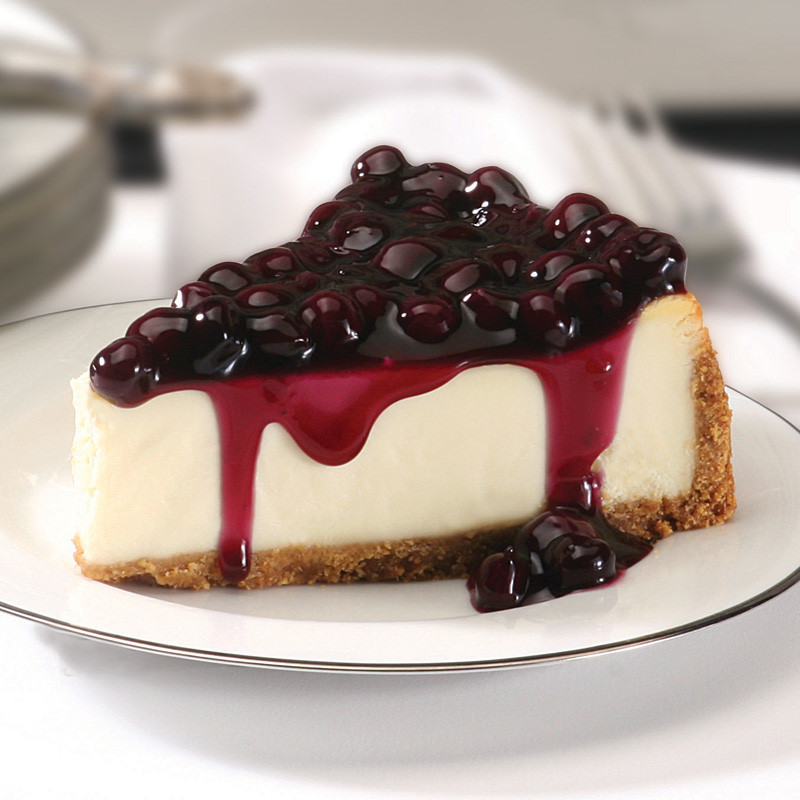
Bánh pho mát
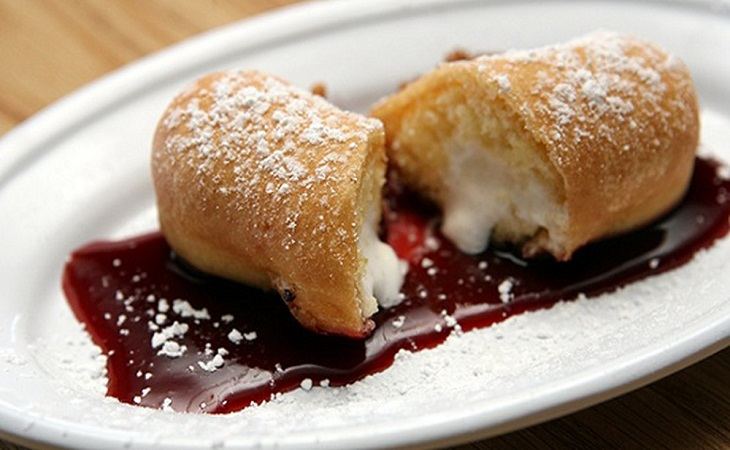
Bánh Twinkies
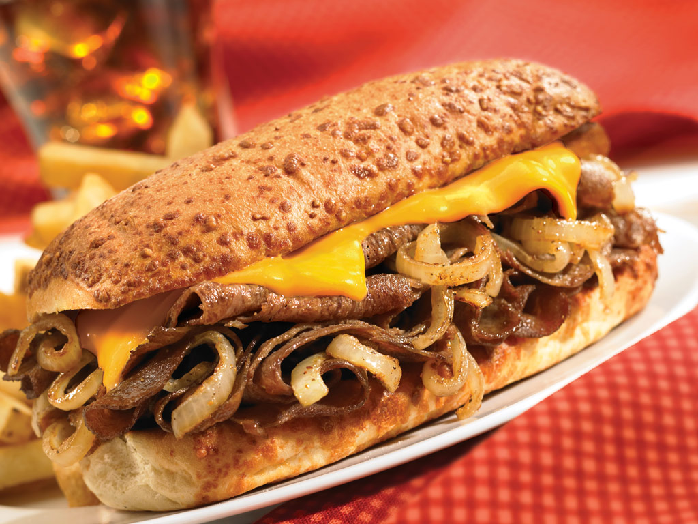
Bánh Cheese Steak
Cupcake Alaska
10 loại bánh đặc trưng của Anh
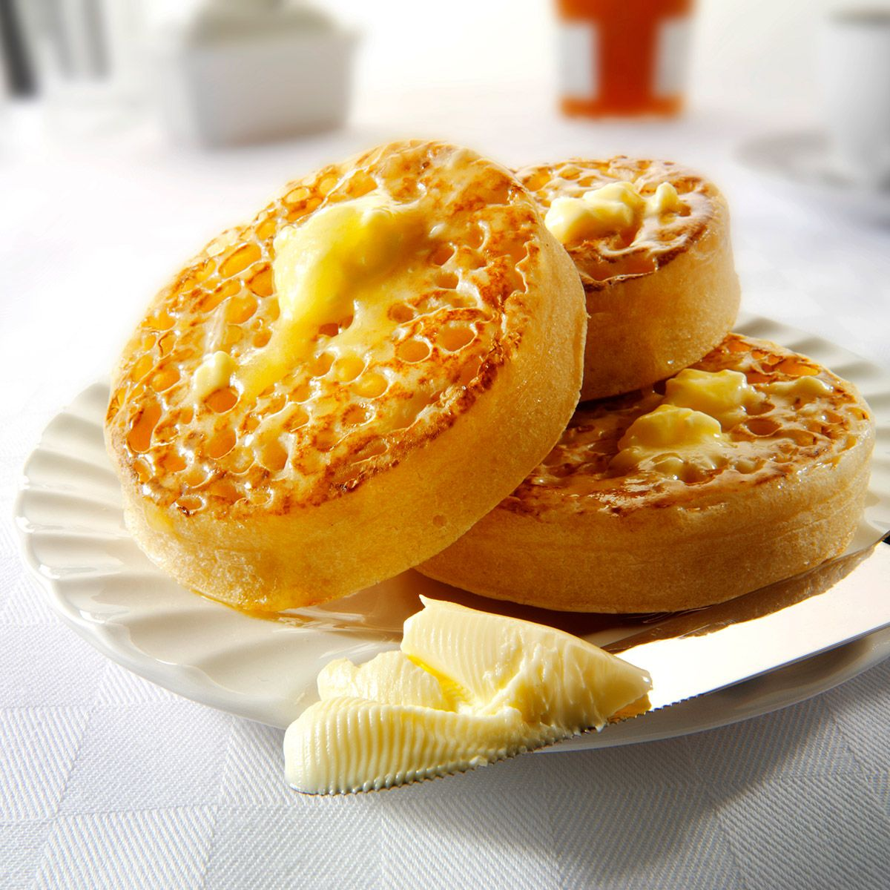
Bánh crumpets
Bánh Eccles
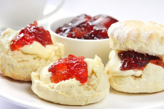
Bánh scones
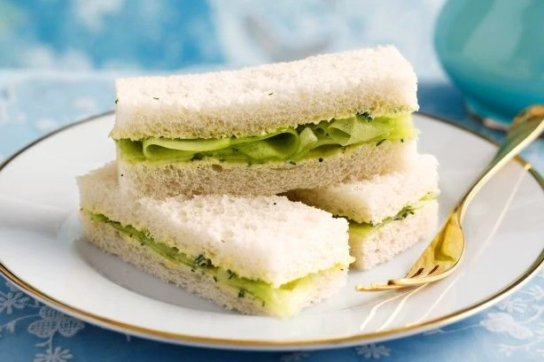
Finger Sandwich
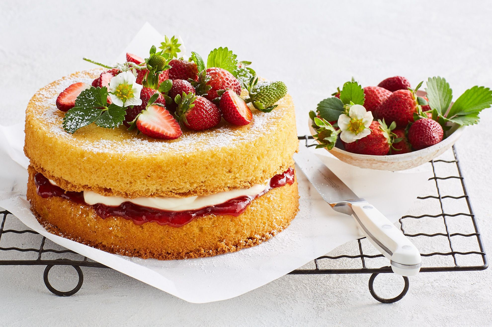
Sandwich Victoria
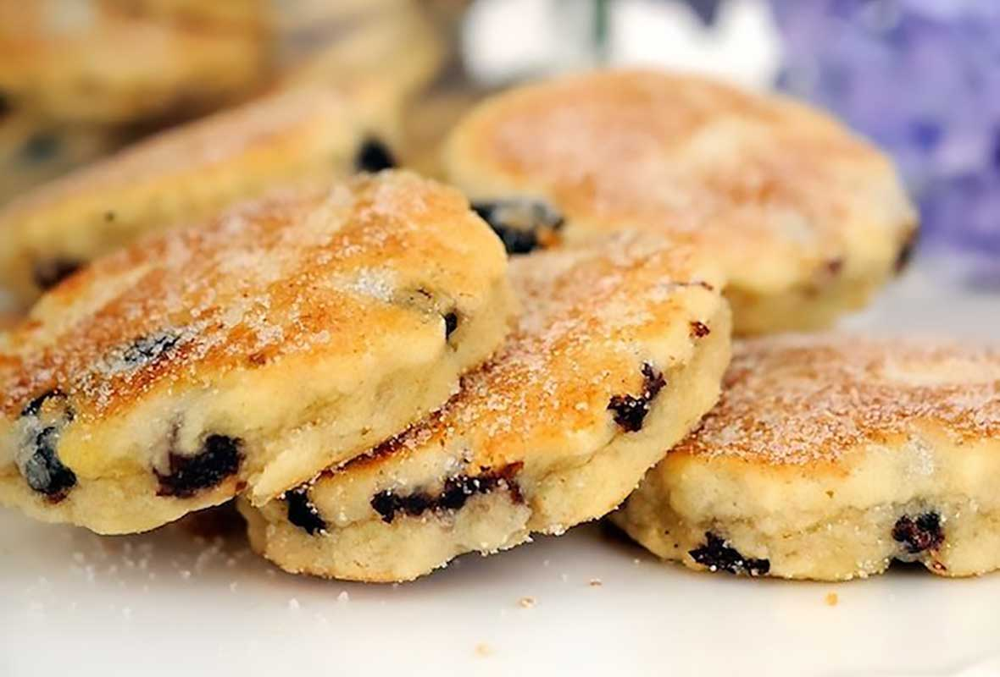
Welsh Cake
Bánh Mince pies
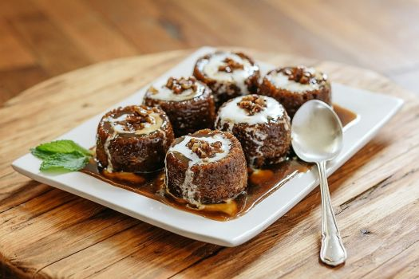
Yorkshire pudding
Bánh Banoffee
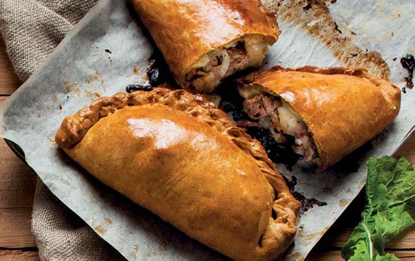
Bánh Cornwall
... "ngỡ người" trước chiếc bánh nhỏ xinh đầy sắc màu của Macaron, Meringue.
Macaron (phát âm tiếng Pháp: [makaˈʁɔ̃])là một loại bánh ngọt của Pháp được làm từ lòng trắng trứng, đường bột, đường cát, bột hạnh nhân và thêm màu thực phẩm. Nhân bánh thường được lấp đầy với mứt, ganache hoặc kem bơ kẹp giữa hai mặt bánh. Thưởng thức macaron, người ta có thể tìm thấy từ những hương vị truyền thống như mâm xôi, sô cô la, cho đến những hương vị mới như nấm và trà xanh.
Cái tên "macaron" bắt nguồn từ một từ tiếng Ý là "maccarone" hoặc "maccherone", có nghĩa là nghiền nát. Kể từ khi từ "macaroon" trong tiếng Anh còn có thể chỉ bánh dừa giòn (coconut macaroon), nhiều người đã lựa cách viết tiếng Pháp để phân biệt hai thứ bánh trong tiếng Anh. Tuy nhiên, điều này lại gây nhầm lẫn về cách viết chính xác của bánh bích quy. Một số công thức nấu ăn loại trừ việc dùng "macaroon" để chỉ bánh macaron trong khi những người khác lại nghĩ hai từ này đồng nghĩa với nhau.
Ở Việt Nam món bánh này trở thành lựa chọn yêu thích của thực khách tại các cửa hàng Brodard.
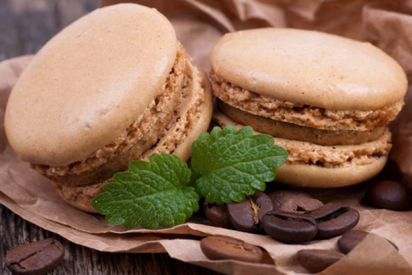
10 loại bánh đặc trưng của Thái
Khanom Buang
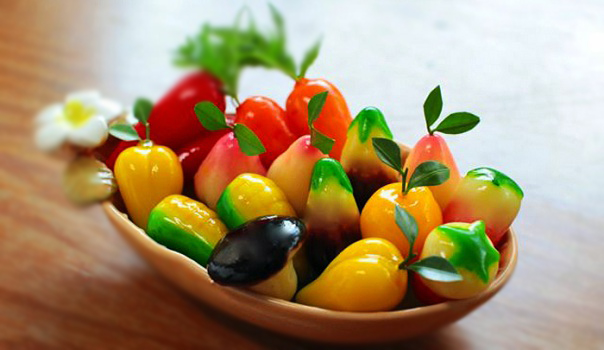
Bánh luk chup
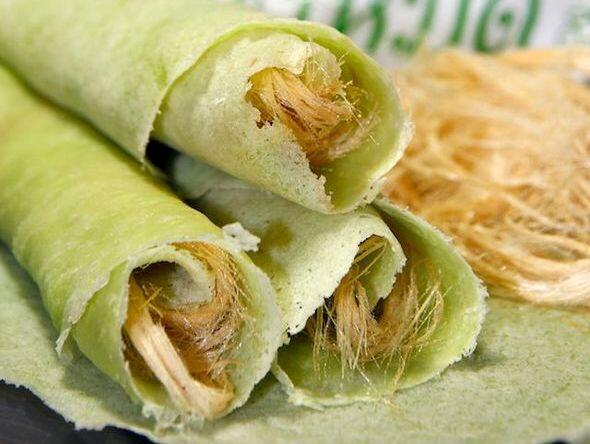
Roti Sai Mai
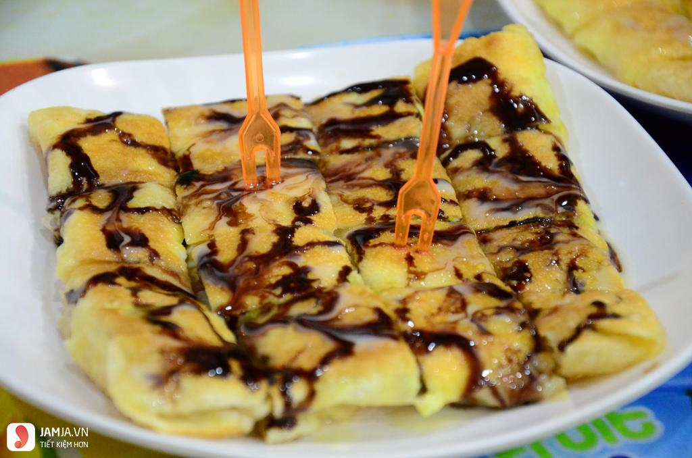
Bánh roti Thái
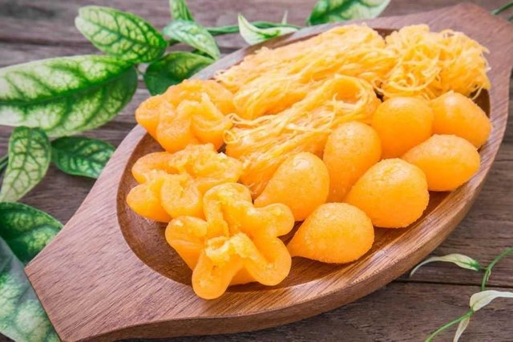
Tong Yip
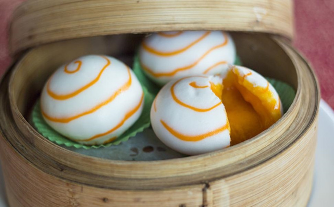
Salapo
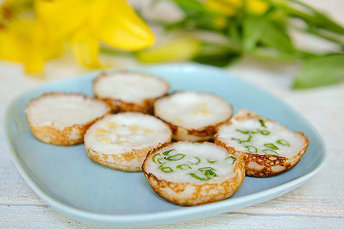
Khanom krok
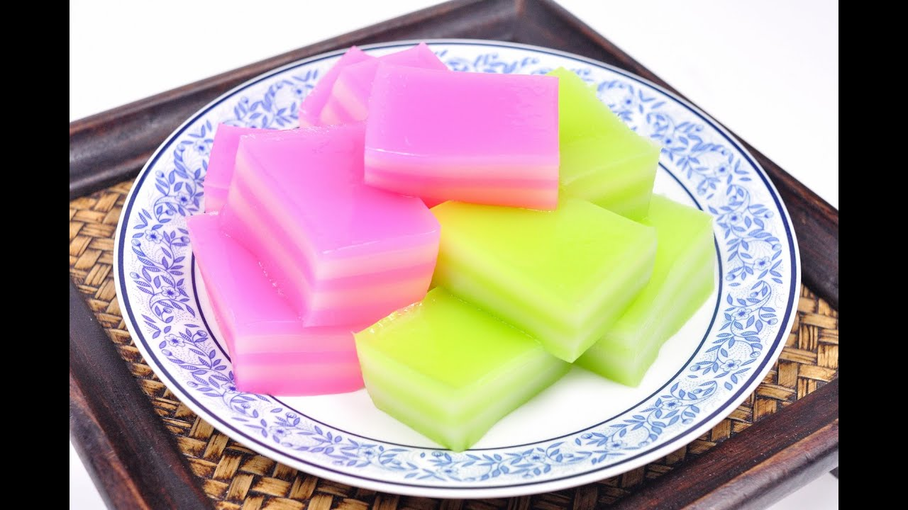
Khanom Chun
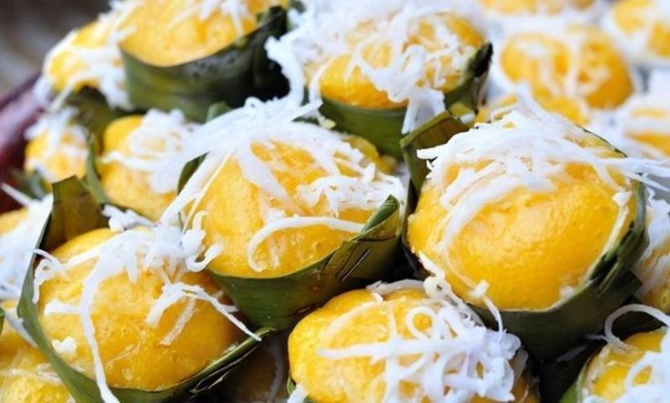
Khanom Tarn
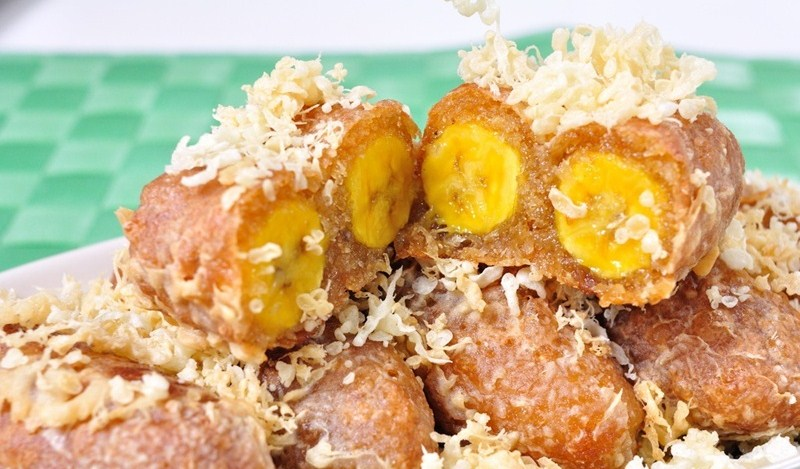
Khao Mao Tod
Nói đến đây không thể nào không nhắc đến món bánh Mochi của "xứ sở hoa anh đào"
Bánh Mochi là món ăn truyền thống rất được người Nhật yêu thích. Bánh mochi là vật cúng không thể thiếu trong gia đình Nhật Bản nhân dịp năm mới. Tại đất nước này, từ xa xưa, mọi người luôn trân trọng những hạt gạo vì đó là loại thực phẩm nuôi dưỡng họ. Và vì lẽ đó, bánh mochi làm từ gạo không chỉ dùng để ăn trong đời sống hàng ngày, mà còn là vật phẩm để dâng lên thần linh.
Mỗi chiếc bánh mochi là sự hòa quyện tinh tế của 3 lớp: vỏ, nhân và phần kem lạnh. Cảm nhận độ dai và dẻo của vỏ bánh, lớp kem xốp lạnh và phần nhân ngọt ngào đi sâu vào cả khứu giác và vị giác cho bạn một cảm giác ngất ngây khi thưởng thức.
Ngày nay bánh mochi gồm rất nhiều loại như: bánh mochi mè, bánh mochi vị trà xanh, bánh mochi đậu đỏ, bánh mochi chocolate bọc dâu tây, bánh mochi kem lạnh,...
Sau đây là cách làm bánh mochi nước đơn giản:
1. Nguyên liệu
Nước lọc: 500 ml
Bột đậu nành (loại kinako) để phủ bánh
Đường bột: 12 gram
Bột làm thạch rau câu agar: 5 gram
Siro đường nâu màu đậm (kokumitsu)
Dụng cụ: Muôi, nồi nhỏ sâu lòng, khuôn đổ thạch rau câu hình giọt nước.
2.Cách nấu hỗn hợp rau câu làm bánh mochi
Trong nồi, cho đường, bột agar vào, trộn đều.
Từ từ rót nước lọc vào nồi, dùng muôi khuấy cho bột tan đều chứ không bị vón cục lại. Trộn hỗn hợp đến khi có độ sánh đặc như ý, không lợn cợn là được.
Bắc nồi lên bếp, nấu lửa lớn cho hỗn hợp rau câu sôi thì tắt bếp.
3.Đổ khuôn và trang trí bánh mochi hình giọt nước
Đợi hỗn hợp rau câu nguội, bạn đổ vào các khuôn.
Cho khuôn rau câu vào ngăn mát tủ lạnh, đợi đông sương lại thì lấy ra.
Tách bánh mochi trong suốt ra khỏi khuôn, xếp lên dĩa.
Rưới siro và rắc bột đậu nành lên bánh trang trí cho đẹp mắt. Vậy là bạn đã hoàn tất món bánh mochi hình giọt nước đầy thanh mát này rồi đó!
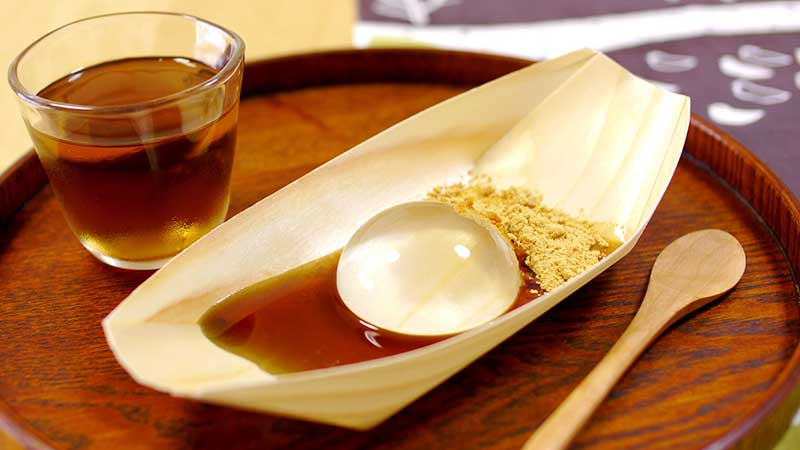
Mẹo:
Với cách làm bánh mochi hình giọt nước này, bạn có thể cho thêm vài bông hoa anh đào vào hỗn hợp rau câu trong khuôn, rồi mới đặt trong tủ lạnh. Thành phẩm sẽ vô cùng hấp dẫn, đúng phong cách Nhật Bản.


 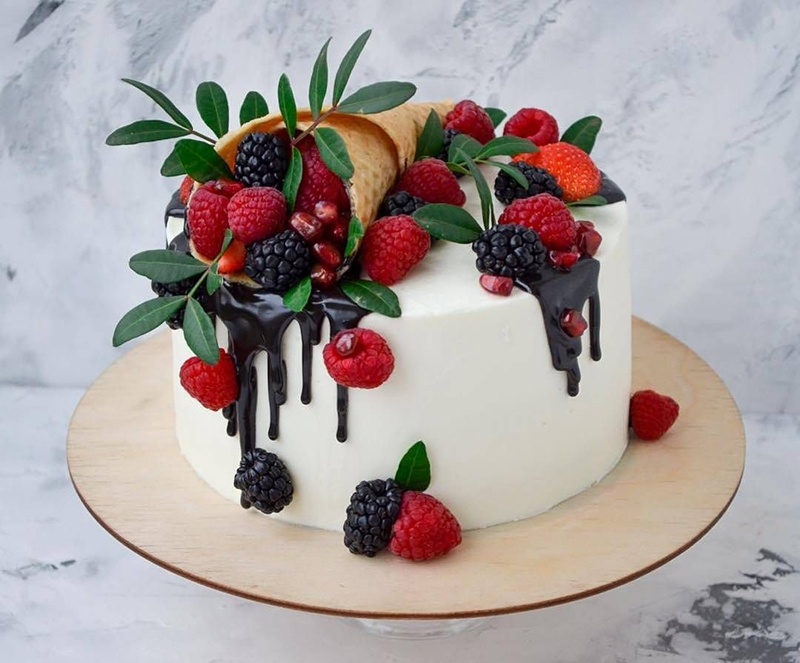
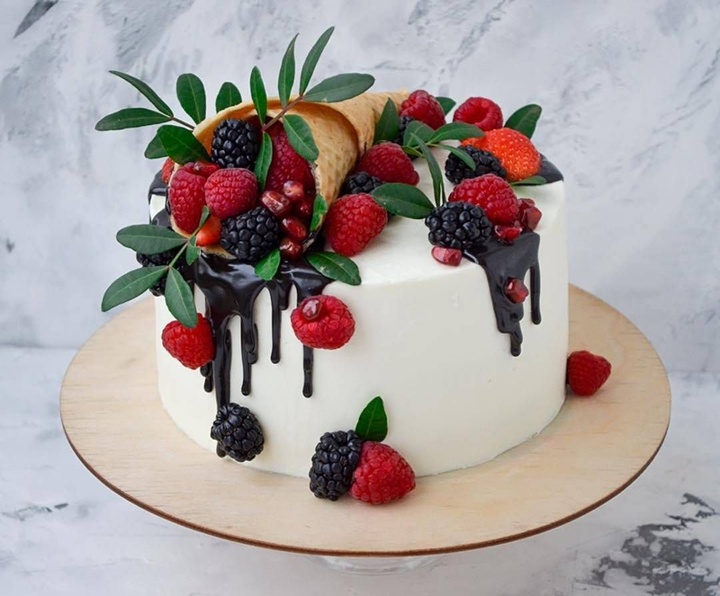


 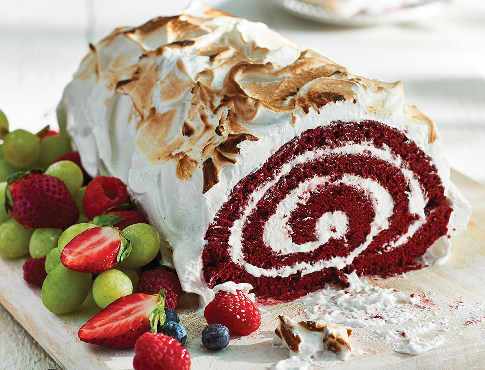
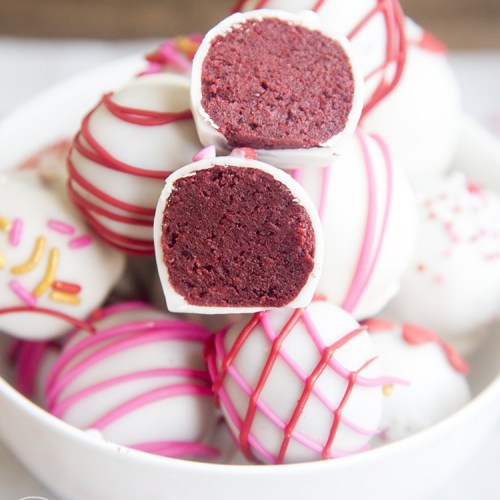
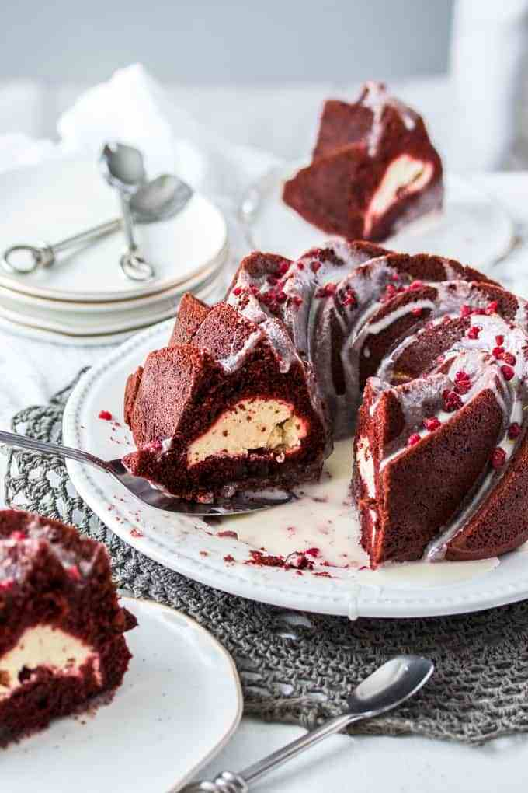
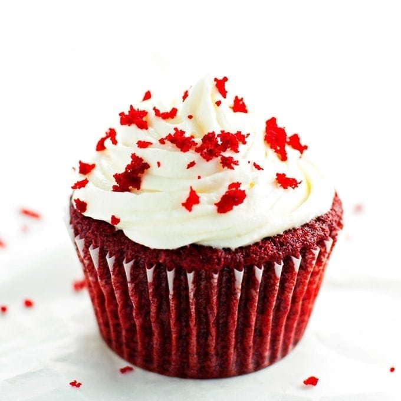
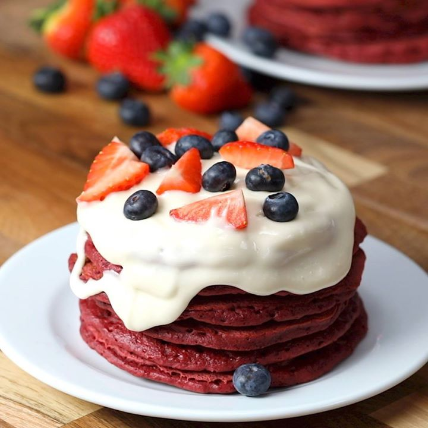
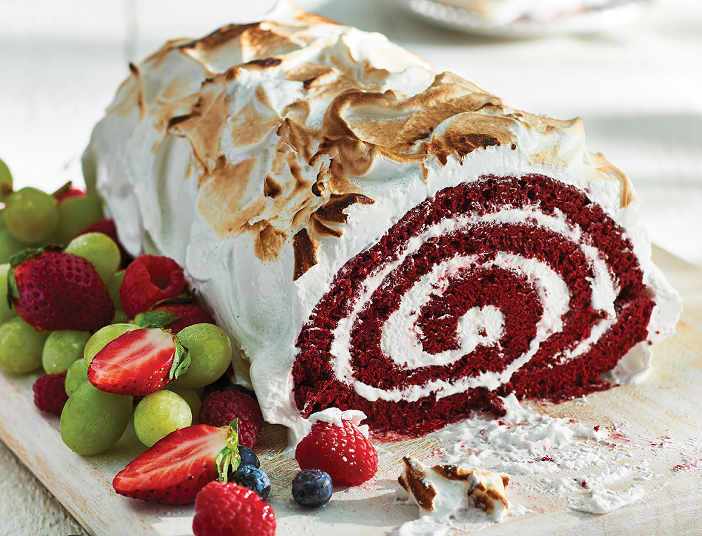
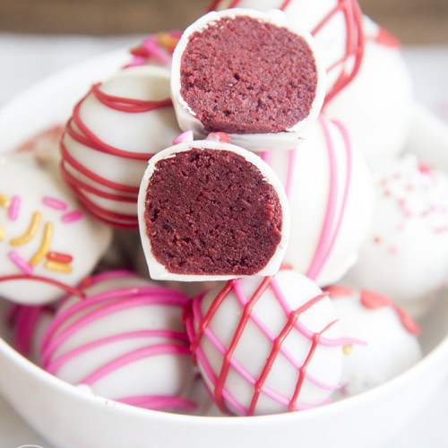
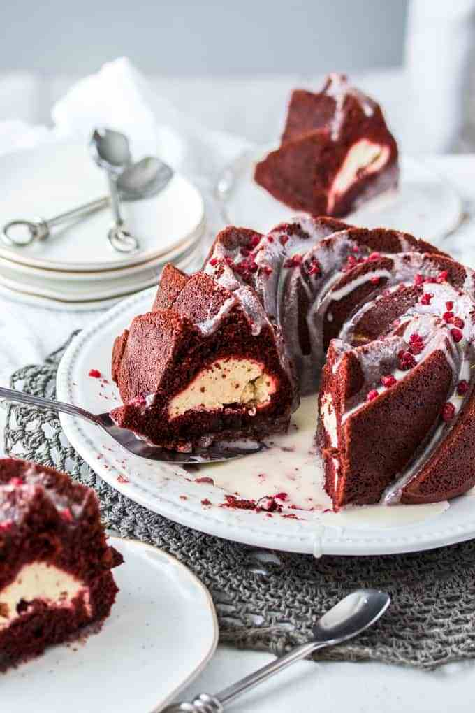
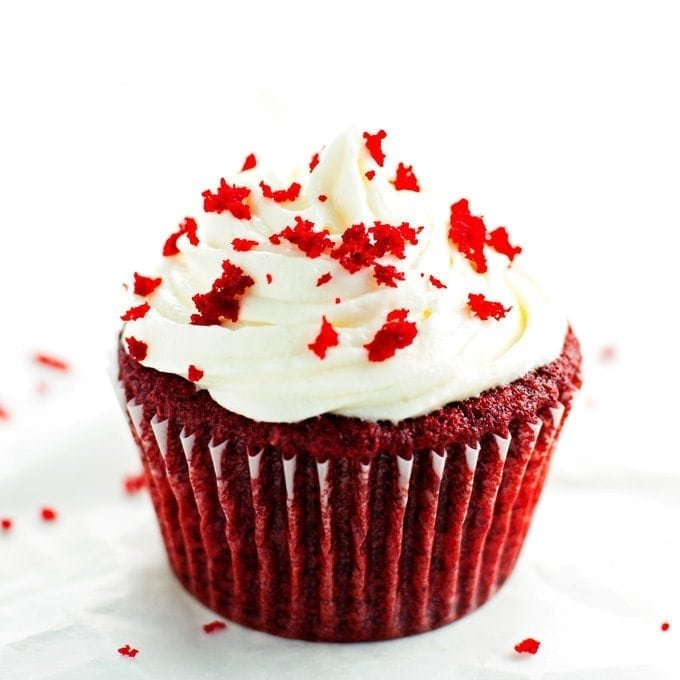
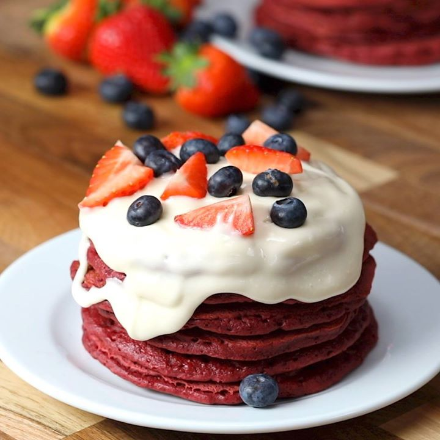